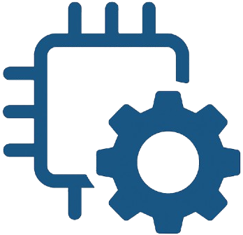

Programming and optimizing hardware accelerators is notoriously difficult, requiring deep knowledge of both hardware and domain-specific languages (DSLs). Recent advances in AI, in particular large language models (LLMs), offer a new paradigm: leveraging pretrained models for verified code translation and hardware-aware optimization. This tutorial introduces LLMLift + Autocomp, two complementary frameworks that automate accelerator programming through LLM-driven compilation.
LLMLift (NeurIPS 2024) demonstrates how LLMs can perform verified lifting—translating general-purpose code into DSLs (including accelerator DSLs), while also generating formal proofs of correctness.

Autocomp arXiv GitHubAutocomp (MLArchSys 2025 Outstanding Paper) shows how LLMs can drive automated optimization. Autocomp uses structured prompting, hardware feedback, and iterative search to generate high-performance accelerator code that surpasses expert hand-tuned implementations across diverse backends such as Gemmini, AWS Trainium, and NVIDIA GPUs.
Through a mix of lectures and hands-on sessions, participants will learn how to use LLMs as reasoning engines for verified code transformation and as autonomous optimization agents for new hardware. The tutorial will cover principles of prompt engineering for compiler tasks, integration of LLMs with theorem provers and performance feedback loops, and practical workflows for applying these techniques to custom accelerators and DSLs. We hope attendees will leave with a better understanding of how LLMs can bridge the gap between hardware design and software optimization, as well as the ability to apply LLMLift and Autocomp to their own projects!
This tutorial is designed for researchers and practitioners of all levels in computer architecture, programming languages, and machine learning systems. Participants should have basic familiarity with AI accelerators and accelerator programming, but no prior experience with LLM-based code generation is required.
By the end of the session, attendees will:
We thank Amazon Web Services (AWS) for generously sponsoring this tutorial with Trainium compute resources, Bedrock credits, and engineer support for the hands-on sessions.